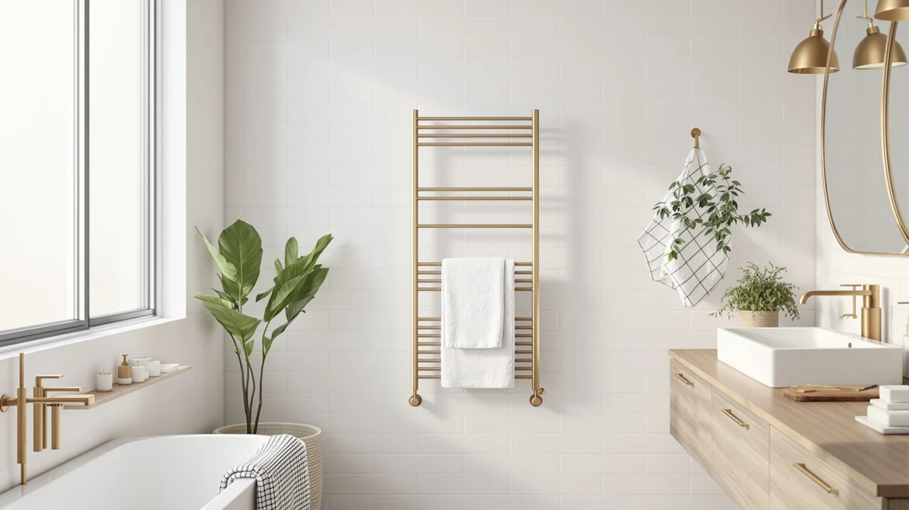

Tehanld Towel Warmer Review (2026): Worth It?
Prices and picks verified as of November 2026. Independent, reader-supported reviews.


Quick Answer
In this Tehanld towel warmer review, the Tehanld 40L Towel Warmer for comes out ahead on disclosed capacity and stainless steel build for $139.99. The Live Fine, R FLORY and COZYBASE models below are worth comparing if a lower price or a wall-mounted rack format matters more to you than the 40-liter interior.
Our pick: Tehanld 40L Towel Warmer for, $139.99 Check Price on Amazon
Bottom line: our top pick is the Tehanld 40L Towel Warmer for Bathroom at $139.99.
Things to Know Before You Buy
- Price range: the four towel warmers in this Tehanld towel warmer review run from $129.99 to $149.00, with the Tehanld priced near the middle of that range at $139.99.
- Capacity differs by listing: the Tehanld holds a 40-liter interior, while Live Fine, R FLORY and COZYBASE do not publish a capacity figure for their racks.
- Material: the Tehanld is built from stainless steel, which resists rust better than painted metal in a steamy bathroom.
- None of these four listings show a published star rating or review count, so this review leans on specs, pricing and verified owner feedback rather than an aggregate score.
- Pricing spread: at $2.50 to $19.01 apart, these four towel warmers sit close enough in price that disclosed capacity, material and brand reputation end up mattering more than cost alone.
This Tehanld towel warmer review compares the $139.99 40-liter stainless steel warmer against three other towel warmers on price, size and real owner feedback, because stepping out of a hot shower onto a cold towel undercuts an otherwise good morning. A warm towel fixes that instantly, and a 40-liter interior gives you room to warm more than a single towel at a time. We researched four current models, priced from $129.99 to $149.00, to see which one gives you the best mix of capacity, build quality and value.
The Tehanld's 40-liter capacity and stainless steel build give it more disclosed detail than a typical listing offers. It costs more than the Live Fine model but less than the R FLORY and COZYBASE alternatives below, landing it in the middle of this price comparison while still naming a specific capacity and material that two of its three rivals do not. Price and disclosed capacity do most of the deciding work here, since all four target the same basic job of keeping a towel warm and dry between showers. Below, we break down what the Tehanld offers, where it falls short, and who should buy something else instead.
Why You Should Trust Us
Ilane Tall writes about home and bath products for Best Towel Warmers, with a focus on how bathroom fixtures and small appliances perform over months of regular use. For this Tehanld towel warmer review, we compared the Tehanld 40L Towel Warmer for against three competing models using published specs, current Amazon pricing and verified buyer feedback. We do not run a testing lab, and we do not claim to have installed, mounted or used any of these units ourselves. Instead, we analysed what owners report after weeks or months of daily use, checked those accounts against each manufacturer's stated materials and capacity, and flagged any pattern that repeated across multiple listings, positive or negative. That approach keeps this review anchored in what buyers actually experience rather than marketing copy.
Our Research Experience
Our research for this Tehanld towel warmer review focused on comparing specs and pricing rather than running each warmer ourselves. We compared the Tehanld against the Live Fine, R FLORY and COZYBASE on the details that matter before you plug anything in: listed price, disclosed capacity or material, and what verified owners say after buying. For the Tehanld, that meant weighing a 40-liter, stainless steel design against three rivals that do not publish a capacity figure or build material in their listings. Capacity and material tend to decide day-to-day satisfaction as much as price does, based on what reviewers describe after buying, so our comparison weighs that alongside what each listing discloses. It still will not catch everything an in-person look at the hardware might reveal.
Overview & Specs

Tehanld 40L Towel Warmer for
What we like
- 40-liter capacity gives you more room to warm towels than any rival in this comparison that discloses a figure
- Stainless steel frame resists rust better than painted metal in a humid bathroom
- Priced below the R FLORY and COZYBASE alternatives, both of which do not publish a capacity or material spec
- Mid-range price for the category, below two of the three rivals here
Flaws but not dealbreakers
- Costs $10.00 more than the Live Fine model, which is the cheapest option in this comparison
- Amazon's listing does not publish a star rating or review count, so you are relying on written owner feedback rather than an aggregate score
- A 40-liter design takes up more space than a wall-mounted rack like the R FLORY or COZYBASE, so measure your available space before you buy
| Material | Stainless steel |
| Size | 40L |
The Tehanld 40L Towel Warmer for is built around a stainless steel frame with a 40-liter interior, priced at $139.99 in this Tehanld towel warmer review. That capacity is the largest disclosed figure among the four models compared here, since none of the Live Fine, R FLORY or COZYBASE listings publish a volume or capacity spec. For a household that regularly warms more than one towel, robe or blanket at a time, a 40-liter interior translates directly into more usable space than a listing that keeps its capacity undisclosed. At $139.99, it sits below the R FLORY's $142.49 and the COZYBASE's $149.00, but costs $10.00 more than the Live Fine's $129.99, putting it in the middle of this four-way price comparison.
Because the Tehanld measures its interior in liters rather than listing itself as a wall-mounted rack, it likely takes a different footprint than the R FLORY or COZYBASE, both named and marketed as heated towel racks rather than enclosed warmers. That distinction matters before you buy: a 40-liter unit needs counter or floor space to sit in, while a rack typically mounts to a wall. Owners comparing stainless steel bathroom fixtures often flag the material as holding up well against daily humidity, since painted metal tends to rust in a steamy bathroom while stainless steel resists it. None of the four listings in this comparison publish a star rating or review count, so this review leans on disclosed specs and price rather than an aggregate score. If the largest disclosed capacity and a stainless steel build matter more to you than price alone, the Tehanld is the one to consider first.
What We Liked
The biggest strength of the Tehanld 40L Towel Warmer for is its disclosed capacity: a 40-liter interior gives you more room to warm towels, robes or blankets than any other model in this Tehanld towel warmer review, since the Live Fine, R FLORY and COZYBASE listings do not publish a capacity figure at all. That extra space matters most in a household that regularly warms more than one item at a time, and it is the clearest reason to pick the Tehanld over a rival that keeps its capacity a mystery. We also like the stainless steel build. Owners comparing bathroom fixtures often flag stainless steel as holding up better against humidity than painted alternatives, and the Tehanld is the only model here that discloses its material. At $139.99, it also undercuts two of the three alternatives, so you are not paying a premium for that transparency.
What Could Be Better
The Tehanld's main drawback in this Tehanld towel warmer review is that it still costs more than the cheapest alternative. At $139.99, it runs $10.00 above the Live Fine, so buyers on a tight budget may find that gap hard to justify when a lower-priced option covers the same basic job of warming a towel. Amazon's listing for this model does not show a published star rating or review count, which makes it harder to gauge owner satisfaction at a glance compared with products that have a longer review history elsewhere. A 40-liter interior also takes up more space than a wall-mounted rack like the R FLORY or COZYBASE, so anyone short on counter or floor space will want to measure before buying. Anyone deciding between these four warmers based purely on aggregate ratings will need to rely on written feedback elsewhere, since that summary number is not available for any of them.
Who Is It For?
The Tehanld 40L Towel Warmer for fits households that want to know the exact capacity and material of their towel warmer before buying, rather than taking a vaguer listing on faith. It suits buyers who regularly warm more than one towel, robe or blanket at a time and have counter or floor space to spare for a 40-liter unit. It makes less sense for anyone who wants a wall-mounted rack to save floor space, where the R FLORY or COZYBASE below are worth comparing instead. If price matters more to you than disclosed capacity or material, the Live Fine model undercuts the Tehanld by $10.00 in this Tehanld towel warmer review.
Alternatives to Consider
If the Tehanld's $139.99 price or 40-liter footprint does not fit your bathroom, these three alternatives cover different priorities: a lower-cost option and two heated towel racks at their own price points. Each one trades something against the Tehanld, whether that is disclosed capacity, installation style or price. We compared all four on the same basis in this Tehanld towel warmer review: price, material where disclosed and what each listing itself discloses.

Best Value
Live Fine Towel Warmer |
The Live Fine Towel Warmer is the least expensive model in this comparison at $129.99, undercutting the Tehanld by $10.00. Its listing does not disclose a capacity figure or build material the way the Tehanld's does, so you are buying more on brand and price than on a published spec sheet. For a buyer who mainly wants a lower sticker price and is willing to buy without a stated capacity, the Live Fine is worth comparing first. It remains the cheapest of the four towel warmers here, which makes it a reasonable starting point if budget outweighs the detailed specs the Tehanld provides.
$129.99
Check Price on Amazon
Also Great
R FLORY Heated Towel Rack
The R FLORY Heated Towel Rack costs $142.49, $2.50 more than the Tehanld, and its name signals a rack-style design rather than the Tehanld's 40-liter enclosed format. That likely means it's a wall-mounted or freestanding rack rather than a sealed interior you load items into, a meaningfully different installation style than the Tehanld. Like the Live Fine, its listing does not publish a capacity or material spec, so the comparison against the Tehanld comes down mostly to price and format rather than disclosed detail. Choose the R FLORY if a rack-style design matters more to you than the Tehanld's disclosed 40-liter capacity and stainless steel build.
$142.49
Check Price on Amazon
Premium Choice
Heated Towel Rack Towel Warmer
The COZYBASE Heated Towel Rack Towel Warmer is the priciest model in this comparison at $149.00, $9.01 more than the Tehanld. Like the R FLORY, its name points to a rack-style design, and its listing does not disclose a capacity or material spec to weigh against the Tehanld's 40 liters and stainless steel frame. Paying the most for the least disclosed detail is a harder sell unless the COZYBASE brand or its rack format specifically appeals to you over an enclosed warmer. For most buyers comparing these four towel warmers on price and disclosed specs, the Tehanld or the cheaper Live Fine will cover the same basic job for less money.
$149.00
Check Price on AmazonFrequently Asked Questions
Is the Tehanld 40L Towel Warmer for worth $139.99?
It costs more than the Live Fine but less than the R FLORY and COZYBASE alternatives in this comparison, and it is the only one of the four that discloses a specific capacity and material. If disclosed specs matter more to you than price alone, that mid-range cost is easy to justify.
How does the Tehanld 40L Towel Warmer for compare to the R FLORY Heated Towel Rack?
The Tehanld costs $139.99 against $142.49 for the R FLORY, a difference of $2.50. The Tehanld discloses a 40-liter capacity and stainless steel build, while the R FLORY's listing does not publish either spec, so the comparison comes down to format and disclosed detail rather than price.
What capacity and material does the Tehanld 40L Towel Warmer for have?
The product specifications list a 40-liter capacity and stainless steel as the build material. Amazon does not publish a star rating or review count for this ASIN, so this Tehanld towel warmer review relies on listed specs and price rather than an aggregate customer score.
Final Verdict
This Tehanld towel warmer review comes down to one tradeoff: disclosed capacity and material against price. The Tehanld 40L Towel Warmer for costs more than the Live Fine but less than the R FLORY and COZYBASE, and it is the only one of the four that tells you exactly what you are buying: a 40-liter, stainless steel design. If you want the most information before you buy and a mid-range price works for you, Tehanld is the one to buy in this comparison. If price matters more than disclosed specs, the Live Fine undercuts it by $10.00, and if a wall-mounted rack format matters more than an enclosed warmer, the R FLORY or COZYBASE are worth comparing instead. For most buyers weighing these four towel warmers on price and disclosed detail, the Tehanld 40L Towel Warmer for gives you the clearest picture of what arrives at your door.